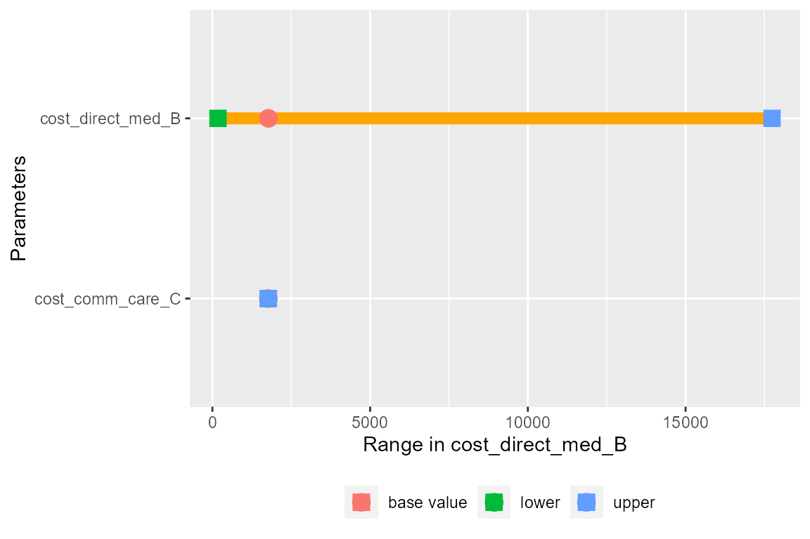
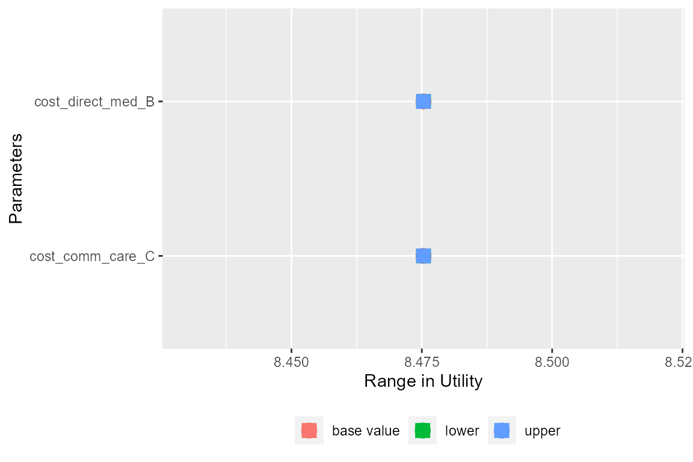

Deterministic sensitivity analysis
Sheeja Manchira Krishnan
2020-11-30
Source:vignettes/Deterministic_sensitivity_analysis.Rmd
Deterministic_sensitivity_analysis.RmdIn this example we will model the cost effectiveness of lamivudine/zidovudine combination therapy in HIV infection ([Chancellor, 1997] (https://pubmed.ncbi.nlm.nih.gov/10169387/))) and also described in Decision Modelling for Health Economic Evaluation, page 32. We have implemented the scenario in which the effect of combination therapy of lamivudine/zidovudine (as the probability of moving to worse health states and having to accrue more cost) is only seen in first 2 years. This means that the transition probability and costs are dependent on first two cycles (As the cycle length is years).
This model aims to compare costs and utilities of two treatment strategies, mono therapy and combined therapy.
Four states are described, from best to worst health-wise:
A: CD4 cells > 200 and < 500 cells/mm3; B: CD4 < 200 cells/mm3, non-AIDS; C: AIDS; D: Death.
library(packDAMipd)
> Registered S3 method overwritten by 'SurvRegCensCov':
> method from
> print.src dplyr
> Registered S3 methods overwritten by 'car':
> method from
> influence.merMod lme4
> cooks.distance.influence.merMod lme4
> dfbeta.influence.merMod lme4
> dfbetas.influence.merMod lme4Define health states for mono therapy - now the costs are just defined, but not defined any value.
A <- health_state("A", cost = "cost_health_A+ cost_drug ",utility = 1) B <- health_state("B", cost = "cost_health_B + cost_drug",utility = 1) C <- health_state("C", cost = "cost_health_C + cost_drug",utility = 1) D <- health_state("D", cost = 0,utility = 0)
Define allowed transition probabilities and number them. The below matrix is numbered so that the maximum entry in the matrix gives the total number of allowed transitions. Column names and row names are just the names of the health states.
tmat <- rbind(c(1, 2,3,4), c(NA, 5,6,7),c(NA, NA, 8,9), c(NA,NA,NA,10)) colnames(tmat) <- rownames(tmat) <- c("A","B" ,"C","D")
Define transition matrix now, but parameters are fine now
tm <- populate_transition_matrix(4, tmat, c("tpAtoA","tpAtoB","tpAtoC",
"tpAtoD",
"tpBtoB", "tpBtoC", "tpBtoD",
"tpCtoC","tpCtoD","tpDtoD" ),
colnames(tmat))
> [1] "The transition matrix as explained"
> transition number probabiliy name from from state to to state
> 1: 1 prob_A_to_A 1 A 1 A
> 2: 2 prob_A_to_B 1 A 2 B
> 3: 3 prob_A_to_C 1 A 3 C
> 4: 4 prob_A_to_D 1 A 4 D
> 5: 5 prob_B_to_B 2 B 2 B
> 6: 6 prob_B_to_C 2 B 3 C
> 7: 7 prob_B_to_D 2 B 4 D
> 8: 8 prob_C_to_C 3 C 3 C
> 9: 9 prob_C_to_D 3 C 4 D
> 10: 10 prob_D_to_D 4 D 4 DCombine the health states and define the strategy. The current strategy ie. control or intervention - here it is mono therapy
health_states <- combine_state(A,B,C,D) mono_strategy <- strategy(tm, health_states, "mono")
Before we run the model, we need to give values to parameters, thus we define the parameter list. We need to make sure that the parameters with numerical values are given first and derived parameters later in the list. The parameters are assigned sequentially as given in the parameter list. So if there is any calculations needed (or using functions), they are defined earlier.
mono_params = define_parameters(cost_zido = 2278, cost_direct_med_A = 1701, cost_comm_care_A = 1055, cost_direct_med_B = 1774, cost_comm_care_B = 1278, cost_direct_med_C = 6948, cost_comm_care_C = 2059, tpAtoA = 1251/(1251 + 483), tpAtoB = 350/(350 + 1384), tpAtoC = 116/(116 + 1618), tpAtoD = 17/(17 + 1717), tpBtoB = 731/(731 + 527), tpBtoC = 512/(512 + 746), tpBtoD = 15/(15 + 1243), tpCtoC = 1312/(1312 + 437), tpCtoD = 437/(437 + 1312), tpDtoD = 1, cost_health_A = "cost_direct_med_A+ cost_comm_care_A", cost_health_B = "cost_direct_med_B+ cost_comm_care_B", cost_health_C = "cost_direct_med_C+ cost_comm_care_C", cost_drug = "cost_zido")
We run the model with strategy mono_strategy for 20 cycles with initial state values 1,0,0,0 corresponding to A,B, C and D. Costs and quays are discounted following the values given in discount. Parameter values will have any parameter defined as health state values or transition probabilities, but not their values were assigned.
mono_markov <- markov_model(mono_strategy, 20, c(1,0,0,0), discount = c(0.06,0),mono_params)
Now for combination therapy, the transition probabilities and cost are dependent on the years or the cycle number. Thus we need to define functions that given the correct output to calculate the probabilities and costs as a function of cycle
#Define function to set the cost to be different for first two cycles define_comb_cost = function(cycle,cost_lami) { if (cycle == 2 || cycle == 3) return(cost_lami) else return(0) } #Define function to set the risk ratio to be different for first two cycles define_rr = function(cycle,rr) { if (cycle == 2 || cycle == 3) return(rr) else return(1) }
Define health states - now the costs are just defined, but not defined any value.
A <- health_state("A", cost = "cost_health_A + cost_drug",utility = 1) B <- health_state("B", cost = "cost_health_B + cost_drug",utility = 1) C <- health_state("C", cost = "cost_health_C + cost_drug",utility = 1) D <- health_state("D", cost = 0,utility = 0)
Define allowed transition probabilities and number them. The below matrix is numbered so that the maximum entry in the matrix gives the total number of allowed transitions. Column names and row names are just the names of the health states.
tmat <- rbind(c(1, 2,3,4), c(NA, 5,6,7),c(NA, NA, 8,9), c(NA,NA,NA,10)) colnames(tmat) <- rownames(tmat) <- c("A","B" ,"C","D")
Define transition matrix now, but parameters are fine now
tm <- populate_transition_matrix(4, tmat, c("tpAtoA_rr","tpAtoB_rr","tpAtoC_rr","tpAtoD_rr",
"tpBtoB_rr", "tpBtoC_rr", "tpBtoD_rr",
"tpCtoC_rr","tpCtoD_rr","tpDtoD_rr" ), colnames(tmat) )
> [1] "The transition matrix as explained"
> transition number probabiliy name from from state to to state
> 1: 1 prob_A_to_A 1 A 1 A
> 2: 2 prob_A_to_B 1 A 2 B
> 3: 3 prob_A_to_C 1 A 3 C
> 4: 4 prob_A_to_D 1 A 4 D
> 5: 5 prob_B_to_B 2 B 2 B
> 6: 6 prob_B_to_C 2 B 3 C
> 7: 7 prob_B_to_D 2 B 4 D
> 8: 8 prob_C_to_C 3 C 3 C
> 9: 9 prob_C_to_D 3 C 4 D
> 10: 10 prob_D_to_D 4 D 4 DBefore we run the model, we need to give values to parameters, thus we define the parameter list.
comb_params <- define_parameters(cost_zido = 2278, cost_direct_med_A = 1701, cost_comm_care_A = 1055, cost_direct_med_B = 1774, cost_comm_care_B = 1278, cost_direct_med_C = 6948, cost_comm_care_C = 2059, tpAtoA = 1251/(1251 + 483), tpAtoB = 350/(350 + 1384), tpAtoC = 116/(116 + 1618), tpAtoD = 17/(17 + 1717), tpBtoB = 731/(731 + 527), tpBtoC = 512/(512 + 746), tpBtoD = 15/(15 + 1243), tpCtoC = 1312/(1312 + 437), tpCtoD = 437/(437 + 1312), tpDtoD = 1, rr = 0.509, cost_lami = 2086.50, rr_cycle = "define_rr(markov_cycle,rr)", tpAtoA_rr = "1-tpAtoB*rr_cycle-tpAtoC*rr_cycle-tpAtoD*rr_cycle", tpAtoB_rr = "tpAtoB*rr_cycle", tpAtoC_rr = "tpAtoC*rr_cycle", tpAtoD_rr = "tpAtoD*rr_cycle", tpBtoB_rr = "1-tpBtoC*rr_cycle-tpBtoD*rr_cycle", tpBtoC_rr = "tpBtoC*rr_cycle", tpBtoD_rr = "tpBtoD*rr_cycle", tpCtoC_rr = "1-tpCtoD*rr_cycle", tpCtoD_rr = "tpCtoD*rr_cycle", tpDtoD_rr = 1, cost_health_A = "cost_direct_med_A + cost_comm_care_A", cost_health_B = "cost_direct_med_B + cost_comm_care_B", cost_health_C = "cost_direct_med_C + cost_comm_care_C", cost_lami_cycle = "define_comb_cost(markov_cycle,cost_lami)", cost_drug = "cost_zido + cost_lami_cycle")
# Combine the health states health_states <- combine_state(A,B,C,D) #The current strategy ie. control or intervention - here it is combination therapy comb_strategy <- strategy(tm, health_states, "comb")
We run the model with strategy mono_strategy for 20 cycles with initial state values 1,0,0,0 corresponding to A, B, C, and D. Costs and qualys are discounted following the values given in discount. Parameter values will have any parameter defined as health state values or transition probabilities, but not their values were assigned
comb_markov <- markov_model(comb_strategy, 20, c(1, 0,0,0),discount = c(0.06,0.0),comb_params)
Now we will define the parameters for the sensitivity analysis. The parameters are already defined as mono_params and comb_params. Their lower value and upper value are defined using definer_parameters() and create parameter table using define_parameters_sens_anal(). Then deterministic sensitivity analysis is done for the Markov model of the choice here the mono_Markov using the function do_sensitivity_analysis. Using the result obtained, a full report or plot (for specific variable) can be generated using report_sensitivity_analysis() and plot_dsa() respectively. To get a report or plot of sensitivity analysis on
ICER on NMB, two Markov models need to be passed on.
min_values <- define_parameters(cost_direct_med_B = 177.4, cost_comm_care_C = 205.9) max_values <- define_parameters(cost_direct_med_B = 17740, cost_comm_care_C = 20590) param_table <- define_parameters_sens_anal(mono_params, min_values, max_values) result_dsa_control <- do_sensitivity_analysis(mono_markov,param_table) report_dsa_control <- report_sensitivity_analysis(result_dsa_control) plot_dsa(result_dsa_control,"cost")

plot_dsa(result_dsa_control,"cost_direct_med_B",type = "range")

plot_dsa(result_dsa_control,"utility",type = "range")
 If we generate the parameter table and deterministic sensitivity analysis for Markov model for combination treatment, we can use to generate the report and plot for both ICER and NMB.
min_values <- define_parameters(cost_direct_med_B = 177.4, cost_comm_care_C = 205.9) max_values <- define_parameters(cost_direct_med_B = 17740, cost_comm_care_C = 20590) param_table <- define_parameters_sens_anal(comb_params, min_values, max_values) result_dsa_treat <- do_sensitivity_analysis(comb_markov, param_table) table_sa <- report_sensitivity_analysis(result_dsa_control, result_dsa_treat, 1000, "mono")
plot_dsa(result_dsa_control,"cost", type = "range",result_dsa_treat, threshold = 1000, comparator = "mono")

plot_dsa(result_dsa_control,"ICER", type = "range",result_dsa_treat, threshold = 1000, comparator = "mono")

debug(plot_dsa_difference)
plot_dsa(result_dsa_control,"cost", type = "difference", result_dsa_treat,
threshold = 1000, comparator = "mono")
> debugging in: plot_dsa_difference(ob_results, plotfor, plot_var)
> debug: {
> check_list <- list(ob_results, plotfor, plot_var)
> checks <- sapply(check_list, check_null_na)
> if (sum(checks) != 0)
> stop("Error - some parameters are NULL or NA")
> if (plotfor == "NMB") {
> results_icer_nmb <- ob_results$results_icer_nmb
> strategy_names <- unique(results_icer_nmb$Strategy)
> parameter <- unique(results_icer_nmb$parameter)
> results <- results_icer_nmb[results_icer_nmb$Strategy ==
> strategy_names[1], ]
> results_parameters <- as.data.frame(parameter)
> results_parameters[["lower"]] <- as.numeric(results[results$value_limit ==
> "lower", ]$NMB)
> results_parameters[["base"]] <- as.numeric(results[results$value_limit ==
> "base", ]$NMB)
> results_parameters[["upper"]] <- as.numeric(results[results$value_limit ==
> "upper", ]$NMB)
> results_treat <- results_icer_nmb[results_icer_nmb$Strategy ==
> strategy_names[2], ]
> results_parameters_treat <- as.data.frame(parameter)
> results_parameters_treat[["lower"]] <- as.numeric(results_treat[results_treat$value_limit ==
> "lower", ]$NMB)
> results_parameters_treat[["base"]] <- as.numeric(results_treat[results_treat$value_limit ==
> "base", ]$NMB)
> results_parameters_treat[["upper"]] <- as.numeric(results_treat[results_treat$value_limit ==
> "upper", ]$NMB)
> }
> else {
> results <- ob_results$results
> results_treat <- ob_results$results_treat
> results_parameters <- as.data.frame(results)
> results_parameters_treat <- as.data.frame(results_treat)
> }
> low_diff <- results_parameters_treat$lower - results_parameters$lower
> base_diff <- results_parameters_treat$base - results_parameters$base
> upp_diff <- results_parameters_treat$upper - results_parameters$upper
> name_file_plot <- paste0("Deterministic sensitivity analysis (diff).pdf",
> sep = "")
> grDevices::pdf(name_file_plot)
> p <- ggplot2::ggplot(results_parameters_treat) + ggplot2::geom_segment(ggplot2::aes_(x = low_diff,
> xend = upp_diff, y = ~parameter, yend = ~parameter),
> size = 3, color = "orange") + ggplot2::geom_point(ggplot2::aes_(x = base_diff,
> y = ~parameter, color = "base value"), size = 4) + ggplot2::geom_point(ggplot2::aes_(x = low_diff,
> y = ~parameter, color = "lower"), size = 4, shape = 15) +
> ggplot2::geom_point(ggplot2::aes_(x = upp_diff, y = ~parameter,
> color = "upper"), size = 4, shape = 15) + ggplot2::labs(colour = "",
> y = "Parameters") + ggplot2::labs(x = paste("Difference in ",
> plot_var, sep = "")) + ggplot2::theme(legend.position = "bottom")
> graphics::plot(p)
> grDevices::dev.off()
> return(p)
> }
> debug: check_list <- list(ob_results, plotfor, plot_var)
> debug: checks <- sapply(check_list, check_null_na)
> debug: if (sum(checks) != 0) stop("Error - some parameters are NULL or NA")
> debug: if (plotfor == "NMB") {
> results_icer_nmb <- ob_results$results_icer_nmb
> strategy_names <- unique(results_icer_nmb$Strategy)
> parameter <- unique(results_icer_nmb$parameter)
> results <- results_icer_nmb[results_icer_nmb$Strategy ==
> strategy_names[1], ]
> results_parameters <- as.data.frame(parameter)
> results_parameters[["lower"]] <- as.numeric(results[results$value_limit ==
> "lower", ]$NMB)
> results_parameters[["base"]] <- as.numeric(results[results$value_limit ==
> "base", ]$NMB)
> results_parameters[["upper"]] <- as.numeric(results[results$value_limit ==
> "upper", ]$NMB)
> results_treat <- results_icer_nmb[results_icer_nmb$Strategy ==
> strategy_names[2], ]
> results_parameters_treat <- as.data.frame(parameter)
> results_parameters_treat[["lower"]] <- as.numeric(results_treat[results_treat$value_limit ==
> "lower", ]$NMB)
> results_parameters_treat[["base"]] <- as.numeric(results_treat[results_treat$value_limit ==
> "base", ]$NMB)
> results_parameters_treat[["upper"]] <- as.numeric(results_treat[results_treat$value_limit ==
> "upper", ]$NMB)
> } else {
> results <- ob_results$results
> results_treat <- ob_results$results_treat
> results_parameters <- as.data.frame(results)
> results_parameters_treat <- as.data.frame(results_treat)
> }
> debug: results <- ob_results$results
> debug: results_treat <- ob_results$results_treat
> debug: results_parameters <- as.data.frame(results)
> debug: results_parameters_treat <- as.data.frame(results_treat)
> debug: low_diff <- results_parameters_treat$lower - results_parameters$lower
> debug: base_diff <- results_parameters_treat$base - results_parameters$base
> debug: upp_diff <- results_parameters_treat$upper - results_parameters$upper
> debug: name_file_plot <- paste0("Deterministic sensitivity analysis (diff).pdf",
> sep = "")
> debug: grDevices::pdf(name_file_plot)
> debug: p <- ggplot2::ggplot(results_parameters_treat) + ggplot2::geom_segment(ggplot2::aes_(x = low_diff,
> xend = upp_diff, y = ~parameter, yend = ~parameter), size = 3,
> color = "orange") + ggplot2::geom_point(ggplot2::aes_(x = base_diff,
> y = ~parameter, color = "base value"), size = 4) + ggplot2::geom_point(ggplot2::aes_(x = low_diff,
> y = ~parameter, color = "lower"), size = 4, shape = 15) +
> ggplot2::geom_point(ggplot2::aes_(x = upp_diff, y = ~parameter,
> color = "upper"), size = 4, shape = 15) + ggplot2::labs(colour = "",
> y = "Parameters") + ggplot2::labs(x = paste("Difference in ",
> plot_var, sep = "")) + ggplot2::theme(legend.position = "bottom")
> debug: graphics::plot(p)
> debug: grDevices::dev.off()
> debug: return(p)
> exiting from: plot_dsa_difference(ob_results, plotfor, plot_var)